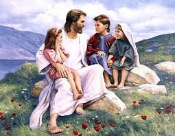
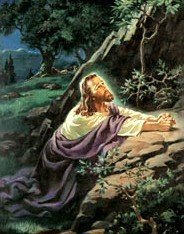

په پیل کې کلمه وه
یو لوی داخله؟

یو ډیر ارامه ننوتل
نو، ایا دا څنګه 2000 کاله دمخه پیښ شوي؟ ایا خلک په تمه وو: ایا دوی د عیسی د زیږون په تمه ټول کورونه سینګار کړي؟ ایا دوی د دې اوږد انتظار زیږون لمانځلو لپاره یو بل ته ډالۍ اخیستې وې؟ کله چې هغه زیږیدلی و، ایا په ټوله نړۍ کې یو اعلان خپور شو چې نجات ورکوونکی په پای کې راغلی دی؟کافي نه.

کله چې عیسی په بیت لحم کې زیږیدلی و ، چې د ډیویډ ښار هم ویل کیږي (په یاد ولرئ؟) ، یوازې یو څو خلک واقعیا پدې خبر وو. هلته مریم، د عیسی مور، او یوسف، د هغې منګی وه. هغه خلک چې د هغه کور د بام مالک وو چې مریم او یوسف پکې اوسیدل شاید خبر وي چې ښځې زیږیدلی و، مګر دا د دوی لپاره کوم ځانګړی اهمیت نه درلود.
مګر په جنت کې لویه خوښي وه ، موږ پوهیږو ، ځکه چې لوقا 2: 8-14 موږ ته وایی چې د فرښتو یوه لویه ډله د عیسی د زیږون په شپه ځینې شپانو ته راڅرګنده شوه. دوی نه یوازې دا اعلان وکړ چې د عیسی په نوم یو ماشوم زیږیدلی، بلکې دوی په حقیقت کې اعلان وکړ چې هغه هغه مسیح دی چې یهودي خلک یې د اوږدې مودې لپاره انتظار کاوه!
مګر دا به نور دېرش کاله وي مخکې لدې چې بل څوک د دې موندلو پیل وکړي.

څلور سړي، څلور کیسې
د عیسی د مړینې، بیا ژوندي کیدو او آسمان ته د پورته کیدو په کلونو کې، څلور مختلف سړي د عیسی د ژوند په اړه لیکلو ته هڅول شوي. د نوي عهد نامې لومړني څلور کتابونه د هغو سړو لپاره نومول شوي چې دا ژوندلیکونه یې لیکلي دي (دوی عموما انجیل ویل کیږي): متی، مارک، لوقا او جان.دوی په دې اړه له یو بل سره بحث نه دی کړی. دوی ممکن حتی نه پوهیږي چې بل څوک د عیسی کیسه لیکي. متی، لوقا او جان تقریبا یقینا د مارک انجیل لوستلی وو. پوهان په دې باور دي چې دا د عیسی لومړنی ژوندلیک و چې لیکل شوی و. مګر څلور انجیلونه د یو بل څخه په خپلواکه توګه لیکل شوي.

کله چې یو څوک د یوې پیښې په اړه کیسه بیانوي، هغه به معمولا هڅه وکړي چې هغه څه شامل کړي چې د دوی په نظر، ترټولو مهمې برخې دي. دا د متی، مارک، لوقا او جان سره قضیه وه. په ځینو کې هغه پیښې شاملې دي چې نور یې نه کوي؛ ځینې پیښې په یو څه توپیر سره بیانوي.
د مثال په توګه، یوازې متی او لوقا د عیسی د زیږون کیسه بیانوي. شاید، د لوقا په ذهن کې، دا د خلکو لپاره مهم و چې پوه شي چې عیسی د یوې پیغلې نجلۍ څخه زیږیدلی و. د مریم منګی، یوسف، د عیسی پلار نه و؛ عیسی د خدای زوی و. (لوقا 1: 26-38)
د میتیو انجیل د عیسی د کورنۍ ونې سره پیل کیږي. ایا تاسو په یاد لرئ چې څنګه، په هغه وخت کې، خدای د ابراهیم سره ژمنه کړې وه چې نړۍ به د یو پاچا په واسطه برکت شي چې د هغه د اولاد څخه راځي (پیدایش 12: 3)؟ میتیو پاملرنه کوي ترڅو موږ ته وښیې چې عیسی د پاچا ډیویډ مستقیم اولاد و ، کوم چې د ابراهیم مستقیم اولاد و. عیسی د هغه پخوانۍ وړاندوینې بشپړول و.
د مارک او جان په قضیه کې ، دوی داسې بریښي چې د عیسی په اړه لیکل شوي ، هرڅوک به پوه شي چې دوی د چا په اړه خبرې کوي: په ځمکه کې د هغه په ورځو کې ، عیسی خورا مشهور و. نو ، مارک او جان د عیسی په اړه خپلې کیسې له هغه وخته پیل کوي کله چې هغه خپل د ځمکې وزارت پیل کړ ، دا هغه وخت دی چې عیسی شاوخوا دېرش کلن و.
یو غیر متوقع مسیح

کله چې موږ د پیغمبرانو په اړه زده کړل چې وړاندوینه یې کړې وه چې اسراییل به اسور او بابل ته راښکته شي ، موږ دا هم زده کړل چې ورته پیغمبرانو وړاندوینه کوله چې یو پاچا ، مسیح ، نجات ورکوونکی به د پاچا ډیویډ له لیکې څخه راووځي. دې وړاندوینې یهودانو ته امید ورکړ چې اسراییل به یو ځل بیا یو لوی ملت شي، چې یو پاچا به راشي چې د اسراییلو ټول دښمنان فتح کړي او دوی به یو لوی ځواک جوړ کړي چې په نړۍ کې به حاکم وي.
خو يهودانو ټولې وړاندوينې نه لوستلې؛ یا، که دوی وو، دوی د دوی ځینې په لویه کچه غلط پوهیدل. پیغمبرانو د مسیح دوه توضیحات ورکړل چې خدای به یې لیږلی وي. یو، په حقیقت کې، یو پیاوړی واکمن و. هغه څه چې یهودیان نه پوهیدل دا وو چې دا پاچا به له خورا ناڅرګند ځای څخه راشي او هغه به په ډیر شوق سره نه راځي (په ناڅرګند کوچني بیت المقدس کې خاموشه شپه په یاد ولرئ؟). دا نوی پاچا به داسې سړی وي چې د ځمکې په غم، غم او درد پوهیږي، نه د پاچاهۍ جلال او واک.
د یو ماتې خوړلي، بې روحه خلکو په توګه، یهودانو د مسیح په لټه کې نه و لکه عاجز کس چې عیسی و. دوی د هغه په پرتله ډیر په زړه پوری یو څوک په لټه کې وو.
او همداسې وشول، کله چې عیسی راغی او د دوی په مینځ کې اوسیده، دوی مسیح ونه پیژندل کله چې دوی هغه ولید.
د عیسی درس
په یاد ولرئ چې عیسی په هغه ځای کې لوی شوی چې د بل هیواد تر واکمنۍ لاندې و: پدې وخت کې ، دا د روم قوي امپراتوري وه. عیسی په یوه ساده ټولنه کې لوی شوی؛ یهودي خلک ډیر متقیان وو، او د هغه ګاونډیان بزګران یا کب نیونکي یا سوداګر وو (یوسف، د هغه د مور میړه، د سوداګرۍ له لارې ترکاڼ و).
شاید د دې له امله، عیسی هڅه وکړه چې د کیسې په ویلو سره روحاني حقایقو ته درس ورکړي، چې د مثالونو په نوم یادیږي، چې ډیری وختونه د هغه په ټولنه کې خلک ورسره اشنا او پوهیږي:
- یو بزګر په خپل پټي کې تخم کري (متی 13: 2-23)
- یو زوی چې د خپل مور او پلار په وړاندې بغاوت کوي، مګر د خپلو ګناهونو لپاره د لوی پښېمانۍ سره دوی ته راستون کیږي (لوقا 15: 11-32)
- یو شپون چې خپل یو پسه له لاسه ورکوي (متی 18: 10-14)

د فریسیانو
د عیسی په ورځ کې، پادریانو (بایبل دوی ته فریسیان هم وایي - یوه کلمه چې معنی یې "جلا جلا" ده) د یهودیانو ورځني ژوند واکمن کړ. کاهنان د اسراییلو له دولسو قبیلو څخه راغلي وو چې خدای په ځانګړي ډول د دې رول لپاره غوره کړی و: لیویان (د لیوی قبیلې څخه). دوی دا د دوی دنده ګڼله چې یهودي خلک له ګمراهۍ څخه وساتي لکه څنګه چې دوی په تیرو وختونو کې درلودل. دا د دوی دنده وه، دوی فکر کاوه، د خلکو لپاره انجیل لوستل او تفسیر کول. (په یاد ولرئ هغه څه چې موږ مخکې وویل
خدای د هرچا لپاره انجیل غواړي؟)

عیسی د لیوی د قبیلې څخه نه و، نو عیسی کاهن نه و.
د ربي، یا د انجیل حقایقو او پوهې ښوونکي کیدو لپاره، یو سړی باید په ځانګړي ربینیک ښوونځي کې د اوږدې مودې روزنې څخه تیر شي.
عیسی د ربینیکل ښوونځي ته نه و تللی، نو فریسیانو هغه د ښوونکي په توګه "وړ" نه ګڼل.
نو، د هغه د وزارت له پیل راهیسې، عیسی د مذهبي واکمنانو سره په مخالفت کې و. بیا هم، د خلکو ډیری راټول شوي ترڅو د عیسی درس واوري. د هغه په یوه خورا مشهور تعلیماتو کې ، چې د غره په خطبه کې ویل کیږي (دا د متی 5 او لوقا 6 دواړو کې موندل کیدی شي) ، په حقیقت کې هر هغه ټکی چې هغه جوړ کړی د هغه څه سره مخالف و چې فریسيان به خلک باور وکړي.
ځینې اصلي نظرونه چې عیسی غوښتل د هغه پیروان زده کړي:
- خدای د خلکو سره مینه لري او غواړي چې دوی بیرته د هغه سره مینه وکړي. د خدای سره د مینې ښودلو یوه لاره نه یوازې د قانون د خط اطاعت کول دي ، بلکه د قانون د روح اطاعت کول هم دي. نو، لکه څنګه چې صادق وي، عیسی خپلو پیروانو ته وویل چې مهربان، مهربان او عادل وي.
- عیسی غواړي د هغه پیروان د دوی د مینې په واسطه وپیژندل شي: د خپلو ملګرو مومنانو سره مینه ، حتی د دوی دښمنانو سره مینه. خدای ژمنه کړې چې مومنانو ته به د دوی ګناهونه بخښي؛ هغه غواړي چې موږ یو بل ته بخښنه وکړو.
ترټولو مهم شی چې عیسی غوښتل د هغه پیروان پوه شي هغه دا و چې هغه ، عیسی د خدای زوی و ، او دا چې له ګناه څخه خلاصون یوازې د هغه له لارې راځي. په انجیل کې یو له خورا مشهور آیتونو څخه اعلان کوي چې نوی تړون خدای د انسانانو سره رامینځته کړی ، جان 3:16:
ځکه چې خدای د نړۍ سره دومره مینه وکړه چې خپل یوازینی زوی یې ورکړ، نو هر څوک چې په هغه باور لري باید هلاک نشي، بلکې تل ژوند ولري.
د عیسی دا اعلامیه د دوو دلیلونو لپاره انقلابي وه: لومړی، دا نظر چې عیسی د خدای زوی دی ډیری یهودانو ته د منلو وړ نه و. څنګه یوازینی سړی خدای کیدی شي؟ دویمه مفکوره چې د عیسی د ورځې مذهبي مشران نشي منل کیدی دا وه چې نجات نور یوازې د یهودانو لپاره نه دی ساتل شوی. عیسی وویل چې هر څوک چې په هغه باور لري د خدای په سلطنت پورې اړه لري (جان 1:12).
د صدوقانو
صدوقیان، د یهودانو یوه مشهوره، اکثره شتمنه، ډله وه چې د عیسی په وخت کې ژوند کاوه، د رومیانو سره یو ډول سیاسي ترتیب درلود، ترڅو دوی یو څه سیاسي واک ترلاسه کړي. صدوقانو کله ناکله د خپلو ملګرو یهودانو څخه د رومن مالیاتو راټولولو دنده په غاړه اخیستې ، او ډیری وختونه یې په اړه بې ایمانه وو ، خلکو ته یې د حقیقي پور څخه ډیر تادیه کول غوښتل ترڅو دوی د ځان لپاره برخه وساتي. صدوقان د ډیری یهودي خلکو لخوا غداران وګڼل شول ځکه چې دوی د کرکې رومیانو سره نږدې اړیکې درلودې.
د یهودیانو تر منځ د بغاوت خبرې زیاتې وې. دوی د رومي واکمنۍ تر سختۍ لاندې وخوړل. صدوقانو دا خپله دنده ګڼله چې د يهودانو او روميانو تر منځ سوله ټينګه کړي. څومره چې یهودیان رومیانو ته لږ تکلیف ورکوي، نو صدوقانو فکر کاوه، دا به د هرچا لپاره اسانه وي.

د عیسی سره ستونزه
لکه څنګه چې موږ مخکې ولیدل، عیسی د خلکو د ګڼې ګوڼې ښوولو او د خدای او د هغه د مینې په اړه هرچا ته د ښه خبر ورکولو په اړه لاړ. فريسيانو دا خبره هيڅ هم نه خوښوله. دوی غوښتل چې د یهودانو په منځ کې یوازینی مذهبي واک وي. عیسی خلکو ته ښوونه وکړه چې د روحاني مسلو په اړه ډیر ژور فکر وکړي تر هغه چې کاهنانو هیڅکله نه وي کړی، او دوی د دې لپاره له هغه سره مینه درلوده.

صدوقیانو هم هغه لویه ډله نه خوښوله چې عیسی یې جذبوي. د خلکو ګڼه ګوڼه په اسانۍ نه شي کنټرولېدای. که عیسی غوښتل د هغه شاوخوا خلک د روم په وړاندې په بغاوت کې د هغه تعقیب کړي ، نو دوی د دې مخنیوي لپاره څه کولی شي؟
صدوقان پوهیدل چې حتی د یهودانو لویه ډله د رومي اردو د ځواک سره سمون نه لري. که چیرې رومیان د یهودي بغاوت مخه ونیسي، نو دوی به یې په بشپړه توګه مات کړي (او شاوخوا 35 کاله د عیسی د ځمکني ژوند وروسته، دا هغه څه دي چې دوی وکړل). د دوی سیاسي ځواک به نور د رومیانو سره هیڅ معنی نه لري، او صدوقان به د عیسی په څیر د غصب کونکي هیچا له امله خپل ځواک له لاسه ورنکړي!

مطلق بدترین شی چې عیسی یې وکړ، که څه هم، خلکو ته اعلان کول وو چې هغه واقعیا د خدای زوی دی. عیسی دوی ته وویل چې هغه هغه مسیح دی چې دوی یې د اوږدې مودې لپاره انتظار کاوه. د فریسیانو لپاره، دا کفر وو (د خدای لپاره خورا بې عزتي)! د یهودي قانون له مخې، دا یو جرم و چې د مرګ سزا ورکول کیده.
عیسی په وار وار د مسیح په توګه د هغه د ادعا ملاتړ کولو لپاره نښې او معجزې ترسره کړې: هغه ناروغان روغ کړل ، ړانده یې لیده ، او لغړ خلک یې د تګ لامل شول. هغه حتی یو سړی له مړو څخه راپورته کړی و!
عیسی په وار وار د مسیح په توګه د هغه د ادعا ملاتړ کولو لپاره نښې او معجزې ترسره کړې: هغه ناروغان روغ کړل ، ړانده یې لیده ، او لغړ خلک یې د تګ لامل شول. هغه حتی یو سړی له مړو څخه راپورته کړی و!
عیسی دواړه د فریسیانو لپاره د ګواښ په توګه پیژندل شوی و (ځکه چې هغه د دې لامل شوی و چې خلک د دوی په واک کې شک وکړي) او صدوقیانو ته (ځکه چې هغه ممکن د دوی ځواک ته ګواښ وي).
فریسیان او صدوقیان په نورمال ډول د یو بل سره دوستانه یا همکار نه وو ، مګر اوس دوی یو ګډ دښمن درلود: عیسی.
یوه شپه، کله چې عیسی دعا کوله، یهوداس اسکریوټ، یو سړی چې د عیسی د نږدې ملګرو (د هغه دولسو پیروانو) په ډله کې و، د فریسیانو او صدوقانو یوه ډله د ګیتسمني باغ ته ولیده چیرې چې هغه پوهیده چې عیسی لمونځ خوښوي. عیسی د نیول کیدو سره مقاومت ونه کړ، که څه هم هغه پوهیده چې هغه هیڅ جرم نه دی کړی.
په عیسی تورن کسان هغه د پټې محاکمې د ترسره کولو لپاره د معبد لوی کاهن کایفا ته بوتلل. دوی کایفا ته وویل چې عیسی د مسیح په توګه د هغه د ادعا له امله د کفر مجرم و.

هنگامی که در برابر کاهن اعظم ایستاده بود، عیسی گفت: "من مسیح هستم و مرا خواهید دید که در دست راست خدا نشسته ام." (مرقس 14:62)
لکه څنګه چې هغه د لوی کاهن په وړاندې ودرېد، عیسی وویل، "زه مسیح یم، او تاسو به ما د خدای ښي لاس ته ناست ووینئ." (مارک 14:62)
که څه هم د عیسی په وړاندې د "شواهد" ورکولو لپاره غلط شاهدان راټول شوي وو، کایفا پریکړه وکړه چې یوازې د عیسی بیان د جرم اعتراف و. د هغه پریکړه دا وه چې عیسی باید ووژل شي.
یهودیان نشي کولی د روم د والي پونټیوس پیلاټ له اجازې پرته د اعدام سزا ترسره کړي. پادریانو عیسی د پیلاطس په وړاندې راوست او ورته یې وویل چې عیسی خیانت کړی دی: که چیرې هغه د مسیح ادعا وکړي، دوی وویل، دا د یهودانو پاچا دی. د روم د قانون له مخې، هیڅوک نشي کولی ځان ته د قیصر پرته پاچا ووایي.
پیلاطوس واقعیا فکر نه کاوه چې عیسی د پاچا کیدو لپاره جدي ادعا کوي ، ځکه چې هغه حتی د ځان لپاره دفاع هم نه ده کړې لکه څنګه چې هغه محاکمه شوی و. خو د یهودي کاهنانو ټینګار کاوه چې عیسی باید ووژل شي. حتی کله چې پیلاطوس دوی ته وړاندیز وکړ چې یو مجرم وژونکی ، برابا خوشې کړي ، یا عیسی خوشې کړي ، خلکو ټولو چیغې وهلې چې عیسی دې اعدام شي. (مرقس 15: 6-13)

سی مړ کیږي او بیا ژوندی کیږي
صلیب د اعدام د سزا یوه بڼه وه چې د رومیانو لخوا کارول کیده. دا د مرګ لپاره خورا شرمناکه لاره وه. که څه هم عیسی عموما په هنر کې د لنګر جامې اغوستلو په توګه انځور شوی، هغه په حقیقت کې د هغه جامو څخه لیرې شوی و، نو هغه د ټولو لیدلو لپاره بربنډ و. دا په ځانګړي ډول د شرم وړ و ځکه چې د رومیانو لخوا د ترټولو بد ډول مجرمینو لپاره مصلوب ساتل شوی و.
د وهلو یوه شپه وروسته ، لومړی د هغه د یهودي تورنو لخوا او بیا د رومي ساتونکو لخوا ، عیسی د خپل صلیب هغه ځای ته وړل شوی و چیرې چې هغه په صلیب شوی و. هغه د خپلو ټولو وهلو څخه دومره کمزوری و چې د صلیب د وزن لاندې یې نشي برداشت کولی. یو غلام چې دوی د لارې په اوږدو کې تیریدل د عیسی صلیب لپاره د هغه لپاره جوړ شوی و.
کله چې دوی د صلیب کولو ځای ته ورسیدل، رومي ساتونکو د عیسی لاسونه په صلیب باندې ولګول. بیا دوی د هغه جامو لپاره قمار وکړ چې له هغه څخه یې اخیستي وو.
که څه هم دا معمولا په صلیب باندې مړ کیدو لپاره څو ورځې سختې کړاوونه اخیستي ، د عیسی ټپونه او د شپې څخه د وینې کمیدل شاید د هغه مرګ ګړندی کړي. هغه په هماغه ورځ مړ شو چې هغه په صلیب کې کیښودل شو.

پداسې حال کې چې د ګیتسمني په باغ کې د نیول کیدو په وخت کې د عیسی ډیری ملګري له هغه څخه وتلي وو ، هلته د ارمتیا د جوزف په نوم یو سړی و چې هغه یې جرات درلود چې پیلاطوس ته لاړ شي او د عیسی جسد وغواړي ترڅو په سمه توګه خاورو ته وسپارل شي. .
هغه د عیسی جسد په کتان کې وتړلو او په یوه قبر کې یې کېښود چې د تیږو څخه جوړ شوی و. بیا یې یوه لویه ډبره د دروازې په سر کېښوده او په خپله لاره روان شو.
عیسی څو ځله هڅه کړې وه چې خپلو پیروانو ته ووایی چې هغه باید د انسانانو د ګناهونو لپاره د وروستۍ قربانۍ په توګه مړ شي ، مګر دوی هیڅکله هغه نه و پیژندلی. که عیسی د خدای زوی و، دوی استدلال وکړ، که هغه مسیح وي چې د خدای ژمنه کړې وه، نو هغه به څنګه مړ شي؟
په دریمه ورځ وروسته له هغه چې عیسی مړ شو، ځینې ښځې چې د هغه ملګري وې د هغه قبر ته لاړل. دا د یهودانو دود و چې د مړ شوي کس په بدن کې د ځانګړو مصالحو مسح کول. کله چې دوی روان وو، دوی په خپل منځ کې حیران شول چې څنګه به هغه تیږه چې د قبر مخې ته راښکته شوې وه حرکت وکړي.

کله چې ښځې راورسېدې نو حیرانه شوه چې ډبره لا له وړاندې راښکته شوې وه او قبر خالي دی!
کله چې ښځې راورسېدې نو حیرانه شوه چې ډبره لا له وړاندې راښکته شوې وه او قبر خالي دی!
یوې فرښتې چې د عیسی جسد په هغه ځای کې ناست و، هغوی ته یې وویل: "مه ویره مه کوئ، عیسی د مړو څخه راپورته شوی دی، لکه څنګه چې هغه ویلي وو." فرښتې ښځو ته وویل چې خپلو ملګرو ته ورشئ او دوی ته دا لوی خبر ورکړئ چې عیسی له مړو څخه راپورته شوی. (مارک 16: 6-7)
لکه څنګه چې یهودیان هر کال په مصر کې د غلامۍ څخه د دوی د خلاصون د یادولو لپاره د فسحې اختر لمانځي، عیسویان د ایسټر یکشنبه په تاریخ کې د ترټولو غوره پیښې په توګه لمانځي: عیسی له مړو څخه راپورته شوی، په انسانانو باندې د مرګ ځواک فتح کول او د تل لپاره زموږ د ګناهونو بخښنه چمتو کول!
په طبیعي توګه، د عیسی ملګري په دې باور نشي کولی کله چې دوی اوریدلي چې عیسی په قبر کې نه و.
مګر عیسی د هغه د بیا راژوندي کیدو وروسته یوولس پاتې شاګردانو ته څو ځله څرګند شو. هغه د دوی سره د دې په اړه په خبرو کې ښه وخت تیر کړ چې څنګه هغه د ډیری وړاندوینو بشپړیدل و ، او د دوی سترګې په پای کې ټولو حقایقو ته خلاصې شوې چې عیسی هڅه کړې وه چې د هغه د صلیب کیدو دمخه دوی ته درس ورکړي. (لوقا 24:27)

عیسی آسمان ته پورته کیږي
عیسی د هغه د ژوندي کیدو وروسته د څلویښتو ورځو په موده کې پیروانو ته څرګندیدو ته دوام ورکړ. یو ځل، د ډوډۍ په وخت کې هغه د دوی سره شریک کړ، هغه دوی ته وویل چې بیت المقدس نه پریږدي تر څو چې دوی د روح القدس ډالۍ ترلاسه کړي چې دوی سره یې ژمنه شوې وه. (جان 14:16)
په وروستي ځل چې عیسی دوی ته راښکاره شو، پیروانو له هغه څخه وپوښتل چې ایا هغه اوس غواړي چې اسراییل بیرته خپل پخواني ویاړ ته راوړي؟ عیسی ځواب ورکړ چې یوازې خدای پلار د دې ډول پوښتنې ځواب پوهیدلو ته اړتیا لري. (اعمال 1:7)
او کله چې هغوئ ټول هلته د هغۀ سره ودرېدل، نو عيسىٰ د هغوئ نه پورته او لرې کېدل شروع کړل. شاګردانو وکتل او وکتل تر څو چې دوی عیسی نور ونه ویني. عیسی آسمان ته پورته شوی و ترڅو د خپل پلار سره وي. مګر کیسه دلته پای ته نه وه رسیدلې. په حقیقت کې، دا یوازې پیل و!